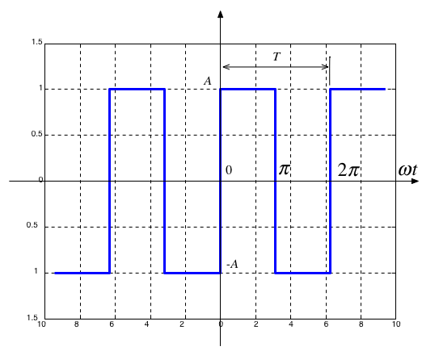

Exponential Fourier Series¶
Colophon¶
An annotatable worksheet for this presentation is available as Worksheet 10.
The source code for this page is fourier_series/2/exp_fs1.ipynb.
You can view the notes for this presentation as a webpage (HTML).
This page is downloadable as a PDF file.
This section builds on our Revision of the to Trigonometrical Fourier Series.
Trigonometric Fourier series uses integration of a periodic signal multiplied by sines and cosines at the fundamental and harmonic frequencies. If performed by hand, this can a painstaking process. Even with the simplifications made possible by exploiting waveform symmetries, there is still a need to integrate cosine and sine terms, be aware of and able to exploit the trigonometrc identities, and the properties of orthogonal functions before we can arrive at the simplified solutions. This is why I concentrated on the properties and left the computation to a computer.
However, by exploiting the exponential function \(e^{at}\), we can derive a method for calculating the coefficients of the harmonics that is much easier to calculate by hand and convert into an algorithm that can be executed by computer.
The result is called the Exponential Fourier Series.
Agenda¶
Exponents and Euler’s Equation
The Exponential Fourier series
Symmetry in Exponential Fourier Series
Example
The Exponential Function \(e^{at}\)¶
You should already be familiar with \(e^{at}\) because it appears in the solution of differential equations.
It is also a function that appears in the definition of the Laplace and Inverse Laplace Transform.
It pops up again and again in tables and properies of the Laplace Transform.
Case when a is real.¶
When \(a\) is real the function \(e^{at}\) will take one of the two forms illustrated below:
clear all
imatlab_export_fig('print-svg') % Static svg figures.
%% The decaying exponential
t=linspace(-1,2,1000);
figure
plot(t,exp(t),t,exp(0.*t),t,exp(-t))
axis([-1,2,-1,8])
title('exp(at) -- a real')
xlabel('t (s)')
ylabel('exp(t) and exp(-t)')
legend('exp(t)','exp(0)','exp(-t)')
grid
hold off

You can regenerate this image generated with this Matlab script: expon.m.
When \(a < 0\) the response is a decaying exponential (red line in plot)
When \(a = 0\) \(e^{at} = 1\) – essentially a model of DC
When \(a > 0\) the response is an unbounded increasing exponential (blue line in plot)
Case when a is imaginary¶
 = cos(omega*t) + j*sin(omega*t)")
This is the case that helps us simplify the computation of sinusoidal Fourier series.
It was Leonhard Euler who discovered the formula visualized above.
Some important values of \(\omega t\)¶
These are useful when simplifying expressions that result from integrating functions that involve the imaginary exponential
Give the following:
\(e^{j\omega t}\) when \(\omega t = 0\)
\(e^{j\omega t}\) when \(\omega t = \pi/2\)
\(e^{j\omega t}\) when \(\omega t = \pi\)
\(e^{j\omega t}\) when \(\omega t = 3\pi/2\)
\(e^{j\omega t}\) when \(\omega t = 2\pi\)
Case where \(a\) is complex¶
We shall not say much about this case except to note that the Laplace transform equation includes such a number. The variable \(s\) in the Laplace Transform
is a complex exponential.
The consequences of a complex \(s\) have particular significance in the development of system stability theories and in control systems analysis and design. Look out for them in EG-243.
Two Other Important Properties¶
By use of trig. identities, it is relatively straight forward to show that:
and
We can use this result to convert the Trigonometric Fourier Series into an Exponential Fourier Series which has only one integral term to solve per harmonic.
The Exponential Fourier Series¶
As as stated in the notes on the Trigonometric Fourier Series any periodic waveform \(f(t)\) can be represented as
If we replace the \(\cos\) and \(\sin\) terms with their imaginary expontial equivalents:
Grouping terms with same exponents¶
New coefficents¶
The terms in parentheses are usually denoted as
The Exponential Fourier Series is
or more compactly
Important
The \(C_k\) coefficents, except for \(C_0\) are complex and appear in conjugate pairs so
Evaluation of the complex coefficients¶
The coefficients are obtained from the following expressions*:
or
These are much easier to derive and compute than the equivalent Trigonemetric Fourier Series coefficients.
* The analysis that leads to this result is provided between pages 7-31 and 7-32 of the text book [Kar12]. It is not a difficult proof, but we are more interested in the result.
Trigonometric Fourier Series from Exponential Fourier Series¶
By substituting \(C_{-k}\) and \(C_{k}\) back into the original expansion
so
Similarly
so
Thus we can easily go back to the Trigonetric Fourier series if we want to.
Symmetry in Exponential Fourier Series¶
Since the coefficients of the Exponential Fourier Series are complex numbers, we can use symmetry to determine the form of the coefficients and thereby simplify the computation of series for wave forms that have symmetry.
Even Functions¶
For even functions, all coefficients \(C_k\) are real.
Proof
Recall
and
From knowledge of the trig. fourier series, even functions have no sine terms so the \(b_k\) coefficients are 0. Therefore both \(C_{-k}\) and \(C_k\) are real.
Odd Functions¶
For odd functions, all coefficients \(C_k\) are imaginary.
By a similar argument, all odd functions have no cosine terms so the \(a_k\) coefficients are 0. Therefore both \(C_{-k}\) and \(C_k\) are imaginary.
Half-wave symmetry¶
If there is half-wave symmetry, \(C_k = 0\) for \(k\) even.
For proof see notes
Proof
From Trigonometric Fourier Series, if there is half-wave symmetry, all even harnonics are zero, thus both \(a_k\) and \(b_k\) are zero for \(k\) even. Hence \(C_{-k}\) and \(C_k\) are also zero when \(k\) is even.
No symmetry¶
If there is no symmetry the Exponential Fourier Series of \(f(t)\) is complex.
Relation of \(C_{-k}\) to \(C_{k}\)¶
\(C_{-k} = C_{k}^*\) always
Example 1¶
Compute the Exponential Fourier Series for the square wave shown below assuming that \(\omega = 1\)
Solved in in Class¶
Some questions for you¶
Square wave is an [odd/even/neither] function?
DC component is [zero/non-zero]?
Square wave [has/does not have] half-wave symmetry?
Hence
\(C_0 = \)[?]
Coefficients \(C_k\) are [real/imaginary/complex]?
Subscripts \(k\) are [odd only/even only/both odd and even]?
What is the integral that needs to be solved for \(C_k\)?
Solution to example 1¶
For \(n\) odd*, \(e^{-jk\pi} = -1\). Therefore
* You may want to verify that \(C_0 = 0\) and
Exponential Fourier series for the square wave with odd symmetry¶
From the definition of the exponential Fourier series
the exponential Fourier series for the square wave with odd symmetry is
Note sign change in first two terms. This is due to the fact that \(C_{-k} = C_k^*\).
E.g. since \(C_3 = 2A/j3\pi\), \(C_{-3} = C_3^* = -2A/j3\pi\)
Trig. Fourier Series from Exponential Fourier Series¶
Since
gathering terms at each harmonic frequency gives
Computing coefficients of Exponential Fourier Series in MATLAB¶
Example 2¶
Verify the result of Example 1 using MATLAB.
EFS_SQW¶
Calculates the Exponential Fourier for a Square Wave with Odd Symmetry.
cd ../matlab
format compact
Set up parameters
syms t A;
tau = 1;
T0 = 2*pi; % w = 2*pi*f -> t = 2*pi/omega
k_vec = [-5:5];
Define f(t)
IMPORTANT: the signal definition must cover [0 to T0]
xt = A*(heaviside(t)-heaviside(t-T0/2)) - A*(heaviside(t-T0/2)-heaviside(t-T0));
Compute EFS
[X, w] = FourierSeries(xt, T0, k_vec)
X =
[(A*2i)/(5*pi), 0, (A*2i)/(3*pi), 0, (A*2i)/pi, 0, -(A*2i)/pi, 0, -(A*2i)/(3*pi), 0, -(A*2i)/(5*pi)]
w =
-5 -4 -3 -2 -1 0 1 2 3 4 5
Plot the numerical results from MATLAB calculation.
Convert symbolic to numeric result
Xw = subs(X,A,1);
Plot
subplot(211)
stem(w,abs(Xw), 'o-');
title('Exponential Fourier Series for Square Waveform with Odd Symmetry')
xlabel('Hamonic frequencies: k\Omega_0 (rad/sec)');
ylabel('|c_k|');
subplot(212)
stem(w,angle(Xw), 'o-');
xlabel('Hamonic frequencies: k\Omega_0 (rad/sec)');
ylabel('\angle c_k [radians]');

Summary¶
Exponents and Euler’s Equation
The exponential Fourier series
Symmetry in Exponential Fourier Series
Example
Answers to in-class problems¶
Some important values of \(\omega t\) - Solution¶
When \(\omega t = 0\): \(e^{j\omega t} = e^{j0} = 1\)
When \(\omega t = \pi/2\): \(e^{j\omega t} = e^{j\pi/2} = j\)
When \(\omega t = \pi\): \(e^{j\omega t} = e^{j\pi} = -1\)
When \(\omega t = 3\pi/2\): \(e^{j\omega t} = e^{j3\pi/2} = -j\)
When \(\omega t = 2\pi\): \(e^{j\omega t} = e^{j2\pi} e^{j0}= 1\)
It is also worth being aware that \(n\omega t\), when \(n\) is an integer, produces rotations that often map back to the simpler cases given above. For example see \(e^{j2\pi}\) above.
Some answers for you¶
Square wave is an odd function!
DC component is zero!
Square wave has half-wave symmetry!
Hence
\(C_0 = 0\)
Coefficients \(C_k\) are imaginary!
Subscripts \(k\) are odd only!
What is the integral that needs to be solved for \(C_k\)?